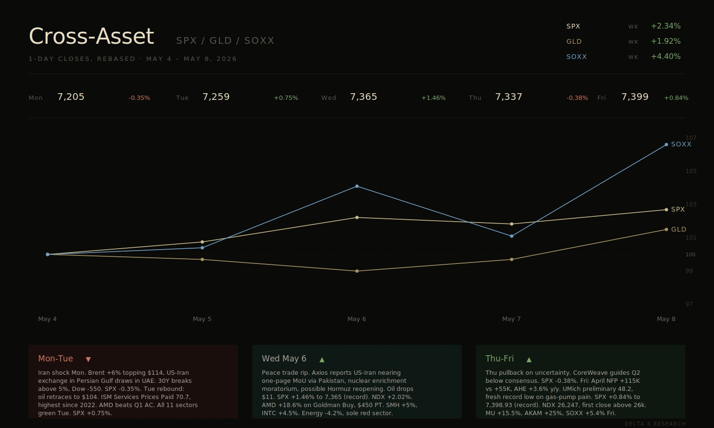

Global Macro
Risk assets extended the rally, but the macro setup was not as clean as the index move suggested. SPX gained 2.3%, NDX rose 4.5% and closed above 26,000 for the first time, while the Dow was flat. This was the market’s sixth straight weekly gain, but breadth stayed narrow. Tech and semis carried the tape, while energy and materials lagged.
- The jobs report landed in the market’s comfort zone.
- April NFP came in at +115K vs +55K consensus, while wage growth stayed contained at +0.2% m/m and +3.6% y/y. That is close to the Fed’s ideal setup for now: labor is not breaking, but wages are not re-accelerating either. It gave the market room to rally without immediately forcing a more hawkish rates response.
- The inflation data underneath the surface was less comfortable.
- ISM Services stayed expansionary at 53.6, but Prices Paid hit 70.7, the highest level since 2022. ISM Manufacturing also improved, with prices rising at the fastest pace since April 2022. The concern is simple: if oil-driven inflation keeps feeding into price surveys, the Fed has less room to sound dovish.
- The Fed setup is more hawkish than the market wants to admit.
- Last week’s FOMC hold at 3.50-3.75% came with four dissents, the most since 1992. Markets are treating the coming Warsh vote as a dovish reset, but that is not obvious. A divided committee, sticky price indicators, and oil-driven inflation pressure make it hard for a new chair to justify cutting too quickly.
- Long-end rates remain the key pressure point.
- VIX ended the week at 17.08, the 10Y yield at 4.38%, and the 30Y retraced to 4.95% after briefly breaking above 5% on Monday’s oil shock. That retracement mattered. The equity rally needed the 30Y to calm down. If the long end pushes back above 5%, long-duration tech becomes much more vulnerable.
Semiconductors
.jpeg)
Capital continued to rotate beyond the NVDA-only AI trade and into the rest of the AI infrastructure stack. Memory, CPUs, optical components, and high-density battery names all caught a bid, while SOXX’s record 17-day win streak in April gave the sector a strong technical backdrop. The main takeaway is that dispersion inside semis is now the trade: investors are looking for the next bottleneck, not just the biggest GPU winner.
- Memory was the clear leader.
- MU closed at $746.81, up 27% on the week and above $800B market cap. HBM4 is sold out for 2026, and the company’s Q3 guide of $33.5B revenue at roughly 81% gross margin was far ahead of what sell-side models had been pricing. The stock is now stretched, but the risk looks more like profit-taking than a fundamental break.
- CPU exposure is getting re-rated.
- AMD closed at $341.57, up 66% YTD, after a Q1 beat and strong data-center growth. The market is starting to price AI as more than just GPUs. Inference, orchestration, and agentic workloads all increase the importance of CPUs, which helped AMD and even older second-source compute names catch a bid this week.
.jpeg)
- NVDA still matters, but it was not the whole story.
- NVDA closed at $215.20, up 8% on the week and near its April high. Earnings on May 20 remain the key event for the AI complex. But the more important point this week was that NVDA lagged parts of the broader chip rally, showing that capital is now moving into the supply-constrained inputs that NVDA’s growth depends on.
- Optical and smaller infrastructure names also worked.
- LITE’s latest quarter reinforced the view that optical capacity is becoming a strategic AI bottleneck, with revenue up 90% Y/Y and orders booked through 2028. AMPX also fit the same broader theme from a different angle, with record Q1 revenue and a cleaner high-density battery story tied to drones, defense, and performance applications rather than commodity storage.
Trading This Week
.jpeg)
This week’s book stayed focused on AI infrastructure. The market was rewarding more than just the mega-cap GPU names: memory, optical, CPU exposure, and smaller infrastructure names all started to trade better. That was the main backdrop for our trades.
Premium Harvesting and Short-Dated Trades
- Lumentum (LITE): closed last week’s position and reopened May 22 bull put spreads.
- We closed the LITE position from last week and collected premium. The stock has already moved a lot, so the risk is not low, but the trend still looks constructive and the optical infrastructure story remains strong. We opened another May 22 bull put spread because we still like the setup, but prefer defined-risk premium selling instead of chasing the stock outright. A 15-20% pullback would not be shocking after this move, but as long as LITE holds above its short-term moving averages, we are comfortable staying involved.
- The LITE thesis is still optical capacity.
- GPUs get most of the attention, but AI data centers also need faster and more efficient optical connections between chips, racks, and data centers. As AI clusters scale, bandwidth and power become real constraints. LITE remains one of the cleaner ways to express that theme.
- Micron (MU): closed and harvested premium after a major move.
- MU was one of the most important trades this week. The stock had an exceptional run, and the tape finally caught up to the HBM thesis. The market is treating high-bandwidth memory as a real AI bottleneck, not just another part of the old memory cycle. We took the win and closed the position.
- MU also confirmed that the AI trade is spreading out.
- Earlier in the cycle, the market mostly wanted NVDA. This week looked different. Capital moved into memory, CPUs, optical, and other upstream AI suppliers. The move is not risk-free, but it shows investors are now looking for the next layer of AI winners.
- NVIDIA (NVDA): opened on Tuesday’s pullback and closed by Friday.
- This was one of the cleaner premium trades of the week. We opened the position on Tuesday when NVDA pulled back to around $195, using a 190 strike. The original plan was not necessarily to close it that quickly, but NVDA ripped much harder than we expected and finished the week around $215. Once the stock moved that far away from our strike, the option value collapsed. At that point, there was no reason to wait until next week, so we closed early and took the premium.
- The NVDA move showed buyers are still aggressive on dips.
- NVDA was not the only leader this week, but the speed of the rebound mattered. The trade moved in our favor faster than expected, the short put became almost worthless, and we took it off. Sometimes the right decision is just to take the trade when the market gives it to you.
Longer-Term Upside Structures
.jpeg)
- LWLG and AMPX: bought 2028 LEAP calls and sold calls against them.
- These were not short-term trades. We bought 2028 LEAP calls to get long-term upside exposure, then sold calls against those positions to reduce the premium cost. That structure fits these names better because both can move violently. We want exposure to the upside story, but we do not want to pay full premium and just sit with decay.
- Lightwave Logic (LWLG): speculative optical exposure.
- LWLG is working on electro-optic polymer technology designed to improve data transmission speed and reduce power consumption. The reason we care is simple: AI infrastructure is running into bandwidth and power constraints. If the market keeps rewarding optical bottleneck names, LWLG gives us a higher-beta version of that trade.
- Amprius (AMPX): high-density battery exposure.
- AMPX is focused on silicon-anode batteries with high energy density and high power output. We like the name because the use case is not just generic battery storage. The cleaner angle is drones, aviation, defense, and other weight-sensitive applications where performance matters. That makes the story more interesting than the usual commodity battery trade.
Earnings Volatility Trade

- AMD: opened Monday, closed Wednesday, and captured IV crush.
- AMD was our earnings volatility trade. Implied volatility was elevated into earnings, and we liked the fundamental setup enough to sell premium. After the event passed, IV came in and we closed the position. The trade was about capturing the gap between expensive pre-earnings premium and cheaper post-earnings premium.
- Why AMD made sense.
- AMD is getting more attention because the market is starting to care about both sides of its AI exposure: GPUs and CPUs. The GPU story is obvious, but the CPU side is becoming more important as AI shifts toward inference, orchestration, and agentic workflows.
- The CPU angle matters more now.
- In the first phase of AI, the trade was mostly about training clusters, which meant GPUs. Now more workloads are moving toward inference and agentic AI, where systems need to coordinate tasks, manage memory, route requests, and execute complex logic. That brings CPUs back into the discussion.
- That is why AMD is relevant beyond a simple GPU catch-up trade.
- In older AI server setups, one CPU might coordinate eight GPUs. As inference and agentic workloads grow, that ratio can move closer to one CPU for four GPUs, and in some cases potentially toward one-to-one. If that happens, CPU demand can grow even if GPU demand stays strong. AMD benefits because it has both EPYC CPUs and Instinct GPUs.
Takeaway
- Overall, this was a strong week for our style of trading.
- We harvested premium in LITE, MU, NVDA, and AMD, while keeping longer-term upside exposure through 2028 LEAP calls in LWLG and AMPX. The thesis is still intact, but many of these names have moved quickly. From here, the key is to avoid chasing and stay disciplined with spreads, rolls, and premium selling.